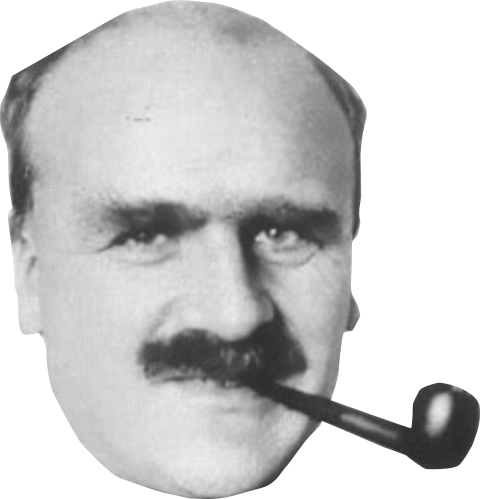
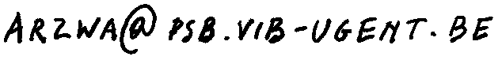

What? A reading group (journal club, if you will) for people interested in theoretical aspects of evolutionary biology at Ghent University.
Where? Due to an ongoing pandemic, the meetings take place virtually.
When? The idea is to have biweekly meetings, starting from January 2021. When exactly still needs to be decided.
Format? We’ll have a max. 40 minutes presentation by the enthusiast who picked the topic, followed by a discussion.
The scope is evolutionary biology in a broad sense (including eco-evo, evo-devo, evolutionary genetics and macroevolutionary themes), but with a focus on theoretical aspects (i.e. not too much concerned with technical aspects, neither mathematically, statistically nor experimentally). The goal is not so much to scrutinize the latest hot research, but rather to gain better or novel insights by trying to collectively understand important ‘concepts and models’. Clearly, the speaker is not assumed to be a specialist of the matter that is discussed.
| Date | Topic | Reading(s) |
|---|---|---|
| January 8 | Fisher’s geometric model of adaptation and the cost of complexity | Main: Orr 2000, additional: Tenaillon (2014), Orr (2005) (lighter on the maths), Chapter 2 of Fisher (1930) (for enthusiasts, section: the nature of adaptation) |
| January 22 | Complex adaptations and the evolution of evolvability | Wagner & Altenberg (1996), additional: Payne & Wagner (2018) |
| February 5 | The holobiont concept in evolution | Theis et al. (2016) and Roughgarden (2020) |
| February 24 | Limits to adaptation along environmental gradients | Polechová and Barton (2015) |
If you want to propose and present a paper or book chapter for discussion, send an email to 
If you want to be added to the mailing list, send an email to that same address.